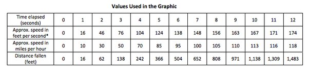
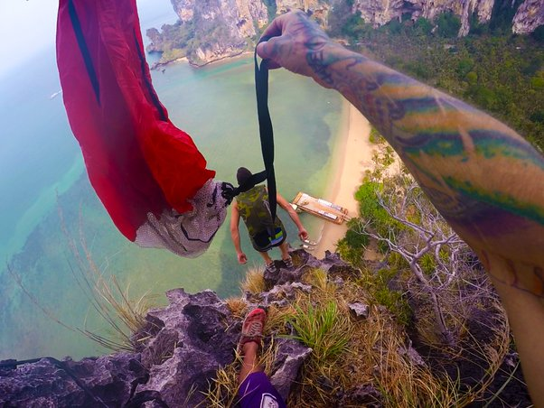
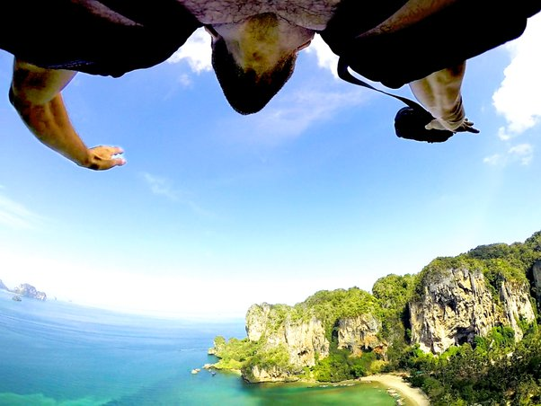

DRAFT / OCTOBER 2023
Why do people BASE jump?
On risk, flow, and why a few seconds of descending flight can still be worth it.
Being new to BASE jumping, I've found myself defending the decision to get into an undeniably deadly sport.[1] However, much to my mother's dismay, it's far too fun to quit due to risk. So what is it about BASE jumping that makes it so fun...that makes it worth selfishly risking my own life? I've come to realize that it's a far more important activity than just being a good time.
So here's a look at what BASE jumping does for me. I make no claim that this is why anyone else jumps, but have discussed pieces of this with many jumpers, and they certainly relate.
Before getting into why I jump, it's important to understand what's at stake in pursuit of a few seconds of descending flight.
Why is it so risky?
Proximity
The acronym of BASE, Bridge - Antenna - Span - Earth, explains the main reason for the risk. The whole premise of the sport is to jump from objects, so the objects often remain within striking distance while falling. As you deploy your parachute, for a host of reasons, it's very easy to have off headings and end up opening toward the object you've exited from. There are evasive maneuvers that can save you from striking the object, but they must happen in a split second, which leaves little room for error. If you don't react quickly enough, you careen into the launch object, arresting the flight of your canopy. And that is the major cause of death, after a complete failure to deploy your canopy in time.
WARNING: Not for the faint of heart. Not fatal, but rough to watch.Cliff Strike[2]
Reaction Time/Backups
For a 100 meter jump, you have about ~4 second before you impact with the ground. Depending on wind, configuration of chute(slider up/off) how well your chute is packed and inflate-position, size and compression of your pilot, it takes about 1 - 1.5 seconds (slider off) to deploy your canopy. Doing the math, this leaves fractions of a second to react when things go wrong.
In skydiving, you have a main canopy and a reserve. I've had a number of skydiver friends get into situations where they can't escape tangled lines with their main chute, pull a cord that detaches the canopy from their harness and deploy the reserve chute to glide to safety.
With BASE, there's 4 seconds to SPLAT, so your main chute IS your reserve. There's no time to cutaway and no time to deploy a reserve. When things go wrong, there's barely enough time even to realize it.
Speed
Knowing there's only 4 seconds to impact, you'd think the fast pace in which things happen is your biggest enemy. But counterintuitively, it's how slow you're going that introduces risk.
It takes about 12 seconds for a person to reach terminal freefall velocity of about 118 mph. In skydiving, you jump from a plane, fall for minutes, deploy a canopy at terminal velocity, far away from any obstructions, at an altitude that leaves a window for correction if an errors occurs.
In BASE, 4 seconds to impact changes everything. It takes 1ish seconds to deploy your chute. You have 1-3 seconds of freefall before deploying depending on how far you must fly to reach your landing zone. At 1 second after leaving the exit, you're traveling at only 10mph. At 3 seconds, only 50mph. At descending speeds this slow, as your canopy is pulled out of the container and filled with air behind you, it is far more susceptible to even the smallest external influences. The two most common being miss-aligned body position and gusts.

At 118mph freefall speed, a 10mph horizontal cross-wind is only 11% of the disrupting force impacting the inflation.
With a 1 second deploy in the same 10mph crosswind conditions, you'd be falling at 10mph, making the disrupting force 50% of the impact on the deploy.
This is called a non-terminal jump. It changes everything.
Judgement
This is the most subjective piece of BASE jumping. Without fail, those that survive a mistake in BASE, blame it not on the conditions, not on the high chance of risk, not on luck, but on a lapse in judgment. Jumpers that have a long career in BASE do not consistently make headlines. They do not continue to push beyond their limits. It's an incremental, conservative learning curve. Very high count jumpers approach every single jump with humility, caution and respect. They are also the first to back away from a jump when anything is questionable. This couldn't be more important.
Fear is a life saver in BASE jumping.
The biggest dichotomy in BASE is that it takes immense mental control of your fear to leap of a cliff with these known risks, yet this same emotion is essential for survival. BASE is a balance of conquering and repressing fear while simultaneously using the rational causation to keep yourself alive.
Certainly a delicate balance.
That's a lot of risk — so why jump?
I'll admit, it's odd to start off a post about 'Why I BASE Jump' by listing all the ways you can kill yourself. But it's from this risk and the requisite emotional discipline, that the best of myself emerges.
I've broken my motivations into 4 sections, flow, adrenaline, reflectivity and ego. The order of these is intentional. I achieve flow before I jump, adrenaline during, and reflectivity after. My ego is an amorphous beast that comes and goes at will.
"BASE Jumping isn’t worth dying for, but it is worth risking dying for."Unknown
Flow
'Flow' is described as "the mental state of operation in which a person performing an activity is fully immersed in a feeling of energized focus, full involvement, and enjoyment in the process of the activity." I've found this in so many of things that capture my interest; writing software, running, rock climbing. Few of the pursuits that draw my deeper interest, are absent of it.
When I fall into a flow state, my mind calms down, it's consumed only by the activity and nothing else. Steven Kotler writes extensively about the increased performance and benefits of flow in The Rise of Superman. An awesome read. I relate with his claims and find myself hyper-focused and my output is of my best when I've achieved this state.
As a very busy-minded person, it's remarkable how infrequent Flow happens without intention. I've searched for a similar state through the practice of yoga and meditation but, to be honest, that's very hard for me. I'm perfectly content with the fleeting pursuit of this from activities, at least at this stage in my life.
BASE jumping brings on a Flow state in a different why than almost any other activity. Instead of achieving Flow while an activity is happening, as with climbing or long-distance running, BASE Flow state occurs in an undefined period of time leading up to my jumps. As I make my approach, hiking up to an exit, I get calm and laser focused. I visualize every step of what I'm about to do. I'm in that moment fully, without distraction. I've found it unique to BASE to decouple the state of Flow from the activity that causes it. Almost like a lucid dreaming decoupling.
"Even without success, creative persons find joy in a job well done. Learning for its own sake is rewarding."Mihaly Csikszentmihalyi - Responsible for first defining 'Flow'
Adrenaline
This is the effect that happens during the jump. This one is pretty obvious. It's a crazy rush. The moment you jump there is a surge of excitement, but seconds after, as the canopy snaps open above your head, the feeling of survival fires one of the hardest adrenaline kicks I've ever had. And it makes you not just feel alive but that being alive is unquestionably worth it. I've yet to contain myself from yelling 'Woo-hoo' at that exact moment. And honestly, I'll be disappointed the day it doesn't happen.

Reflectivity
This is the biggest motivating factor for me. Once the jump is done and the adrenaline subsides, there's a reflection on my own life that is more cogent than nearly anything comparable. Being both introspective and strong-willed, any decision I make in life, I strive to reach the best, most rationally based conclusion I can. The problem with this approach is I can get stuck in a narrow view of opinions and judgments that I use to analyze what is 'best' for me. This makes it difficult to include other perspectives or ideas that may be helpful ways of looking at the world.
Even if I am able to hear a new, potentially helpful perspectives, I can move to dismiss it when it's too divergent from my own 'beliefs', which are often biases. This is a very common trait with us humans. Carol Travis writes extensively about this in her excellent book, Mistakes Were Made But Not By Me[3]. Sometimes, I can even see myself doing this, and can't help but stay closed minded.
For a period after I've jumped, when the adrenaline has washed away, I find myself more open-minded and able to accept these divergent perspectives, even on things I've pondered extensively. I'm able to 'unstuck' myself from tired arguments. The post-BASE reflective state forces away trivialities and allows me to reflect and ponder without (or far less) ego and self-importance being wrapped up in every decision. It reminds me, contradictorily, how finite, remarkable and unimportant life is. This is the perfect mindset for coming to new conclusions, which is ultimately the perfect foundation for personal growth.
When I left my software engineering job San Francisco to travel, for the first time I felt very aimless in my life pursuits. I was giving up an identity I'd worked so hard to build. I'd achieved many of the goals I'd set out for myself, both trivial and audacious. I found myself in a job that provided me the 3 tenants of motivation (autonomy, mastery and purpose), financial freedom, an apartment I loved in the center of a city I loved. I had friends. I had time to pursue my passion for climbing.
On paper, my life had all the necessary attributes to equal contentment. I'd worked hard to achieve all of this and in the end, it didn't feel particularly fulfilling. I also had absolutely no reason to be discontent. Through college and the last decade at work, I'd been so intentioned and driven, tackling life full-on. I was angry at myself to have done so many things that I knew were right, and yet to have wound up discontent and riddled with Existentialism[4] angst.
"So what do I do about it? How do I fix this?", I'd ask myself. I didn't know.
I knew something needed to change but for this problem, 'what' was ill-defined.
Do I go out and get a new job? That didn't feel right.
Do I move? I've done that a bunch of times now.
More things, possessions, etc? That hasn't helped yet.
I felt impatient with myself not being able to find a solution. I discussed this with close friends. I asked people I looked up to for guidance. I came away with a lot of empty recommendations and very little in the form of an actionable solution.
I carried this with me.
When left undistracted, my mind would drift back to this uncertainty without fail.
It didn't go away.
A day after my first jump, I had some time alone. It was my first chance to pause and reflect back on the persistent existential questions that I'd be carrying around with me for more than a year.
But when I paused to reflect, something was different. The angst, the questions that plagued me, felt less pressing.
This shift was not a decrease in importance, but instead an infusion of patience. I felt ok that I didn't have an answer. I felt content knowing that the journey to answer these questions was as worthy a pursuit as the answers themselves.
This post-BASE reflectivity gave me something I had achieved from nothing else: patience.
Ego
I can't deny it. BASE jumping does stroke my ego. I don't do it as much for other people, but to affirm to myself that I am the type of person that can overcome my own fears and take the leap.
It feels badass.
I like knowing that I can and will rise to the challenge when tested.
"A false sense of security is better than no security at all."John Owens
It's damn fun
Oh yea...and it's crazy fun. There's the moniker, "the most fun I've had with my clothes on". I've heard multiple jumpers say this, pause, think about it, and say, "Actually, this may even give sex a run for its money." Honestly, I think they may be doing it wrong, but I concede their point.
Put the fear and risk aside. What person hasn't wished to fly?
Hike a cliff, put on a chute, and leap...it doesn't get much closer than that.

参考资料
[2]. Cliff Strike
[3]. Mistakes Were Made But Not By Me
[4]. Existentialism